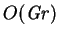
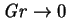
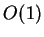

To the best of my knowledge, there have been no studies of vapour transport across a spherical enclosure. The analogous single fluid heat transfer problem, however, has been studied independently by Lewis (1950) and Ostroumov (1958), in connection with gas bubbles in foam insulating materials and the geothermics of underground reservoirs, respectively. Both considered the asymptotic expansion for low Grashof numbers, as will I.
Unfortunately, both Lewis and Ostroumov assumed that the spanwise component of velocity would vanish in the sphere:
In the case considered there are then two ``privileged'' directions [those of gravity and the imposed heating]. We expect therefore that the main circulating flow will be essentially plane, i.e. there will be only two components of velocity of reasonable order of magnitude. (Lewis 1950)
Considering the conditions of symmetry, we assume that the streamlines lie in planes parallel to the plane determined by the directions and [of the imposed heating]. (Ostroumov 1958)For general Grashof numbers, this assumption is incorrect and their results are useless for the present purpose. They are correct, however, for creeping flow, as will be shown below: the dimensionless spanwise component of velocity is  as , whereas the other components are . The problem of the sphere seems not to have been returned to since these two early studies.